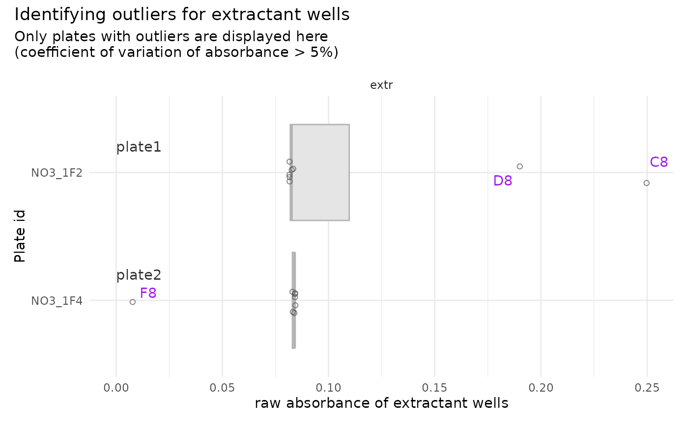

Identify outlier-wells within plates containing suspicious extractant data
Source:R/qc_raw_extr.R
boxplot_outlier_extr.RdIdentify outlier-wells within plates containing suspicious extractant data
Arguments
- suspicious_extractant
A tibble as generated by
suspicious_extr(), can be computed fromdatawithsuspicious_extr()- data
Defaults to NULL. If provided, must be a tibble formatted as
tidy_plates- max_coeff
User-defined threshold value, defaults at 5%. All plates for which the coefficient of variation for extractant raw absorbance is above this threshold will be considered "suspicious plates". ! Be consistent with previous steps
Value
A boxplot generated by ggplot, highlighting information necessary to
create a tibble of wells to be removed with remove_wells(), i.e.,
for each boxplot: plate_ids, well_ids and plate number (corresponding to
the order of plate ids in suspicious_extractant)
Examples
data <- tidy_plates
# 0.5 is unreasonable in most uses, but is used here to ensure some output
suspicious_plate_id <- qc_raw_extr(
data, max_coeff = 0.5, suppress_message = TRUE, suppress_warning = TRUE)
suspicious_extr <- suspicious_extr(
data, max_coeff = 0.5, suspicious_plate_id = suspicious_plate_id)
boxplot_outlier_extr(
suspicious_extractant = suspicious_extr,
max_coeff = 0.5)
